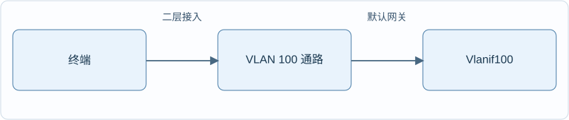

IPv4 与 IPv6 接口地址
在三层接口配置 IPv4 或 IPv6 地址后，设备可以连接对应网段。同一 IPv4 接口可以有主地址和从地址，IPv6 地址逐条添加。
工作原理
接口地址决定本地终结的地址及直连网段。对非直连目标，设备仍需在合适的路由表中找到下一跳。验证时区分接口状态、直连前缀和远端应答。
三层接口支持 IPv4 主从地址与多个 IPv6 地址。IPv6 地址可逐项配置，查询按地址族区分。
配置与验证
拓扑

配置条件
准备 IPv4 掩码和 IPv6 前缀长度。接口必须处于三层模式。要使用 VPN，先绑定 VPN 再设地址。
配置步骤
interface Ethernet 1
ip address 192.0.2.2 255.255.255.0
ipv6 address 2001:db8:10::2 64
#
interface LoopBack 0
ipv6 address 2001:db8:100::1 64
ipv6 address 2001:db8:200::1 64
#
return
在系统视图录入上述片段并提交。删除地址时用相同地址和掩码的 undo 命令。
验证方法
对照以下命令和预期结果核对设备状态。
display ip interface brief
display ipv6 interface brief
display ip routing-table protocol direct
display ipv6 routing-table protocol direct
核对接口上实际生效的地址和所属 VPN。接口在线时，检查相应的直连路由并从同网段对端测试。
运行查询实测节选
r4 三节点用于配置检查的 IPv4 接口简表节选。根据实际接口名找对应行，并核对两列 up/down。
<VortexROS> display ip interface brief
*down: administratively down
^down: standby down
(s): spoofing
The number of interface that is UP in Physical is 11
The number of interface that is DOWN in Physical is 0
The number of interface that is UP in Protocol is 8
The number of interface that is DOWN in Protocol is 3
Interface IP Address/Mask Physical Protocol VPN-Instance
Nve1 10.201.12.1/32 up up default
Tunnel0 192.0.2.1/30 up up default
Vbdif101 192.0.2.5/30 up up default
Vbdif310 203.0.113.1/30 up up default
注意事项
绑定 VPN 后再配置地址。地址和掩码须与链路及用途一致；更改时确认相关直连路由和下游回程。